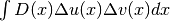

BilaplacianとKirchhoff-Loveプレートブリック要素¶
以下の関数となります。
ind = add_bilaplacian_brick(md, mim, varname, dataname,
region = size_type(-1));
は変数 varname とメッシュ領域 region にBilaplacianブリック要素を追加します。これは、項 を表します。ここで、 は datamame によって決定される係数であり、定数または有限要素法上で記述されます。対応する弱形式は  です。
Kirchhoff-Love板モデルの場合、弱形式は少し異なります（前の形よりも安定しています）。その項を追加する関数は次の通りです。
ind = add_bilaplacian_brick_KL(md, mim, varname, dataname1, dataname2,
region = size_type(-1));
これは変数 varname とメッシュ領域 region にBilaplacian要素を追加します。これは のような項を表します。ここで、 は dataname1 によって決定される屈曲率です。この項は、Poisson比 dataname2 を有するKirchhoff-Love板モデルに続く部分によって積分さます。
4次の偏微分方程式に適切な境界条件を追加するための特定の要素があります。最初のものは次の通りです。
ind = add_normal_derivative_source_term_brick(md, mim, varname,
dataname, region);
これは変数 varname とメッシュ領域 region に正のソース項ブリック要素  を追加します。これは線形システムの右側を更新します。 dataname は b を表し、 varname は v を表します。
を追加します。これは線形システムの右側を更新します。 dataname は b を表し、 varname は v を表します。
Neumann項は以下の要素により追加することができます。
ind = add_Kirchhoff_Love_Neumann_term_brick(md, mim, varname,
dataname1, dataname2, region);
変数 varname とメッシュ領域 region にKirchhoff-LoveモデルのNeumann項ブリック要素を追加しました。 dataname1 は曲げモーメントテンソルを表し dataname2 はその逆テンソルを表します。
そして、次の要素で正規DirichletのDirichlet条件を規定することができます。
ind = add_normal_derivative_Dirichlet_condition_with_multipliers
(md, mim, varname, multname, region, dataname = std::string(),
R_must_be_derivated = false);
ind = add_normal_derivative_Dirichlet_condition_with_multipliers
(md, mim, varname, mf_mult, region, dataname = std::string(),
R_must_be_derivated = false);
ind = add_normal_derivative_Dirichlet_condition_with_multipliers
(md, mim, varname, degree, region, dataname = std::string(),
R_must_be_derivated = false);
これらの要素は、変数 varname の標準偏差とメッシュ領域 region （これは境界でなければなりません）にDirichlet条件を追加します。汎用的な形式は のとおりです。ここで、 はDirichlet条件（均質条件の場合は0）の右辺で、  は変数 multname によって定義された乗数の空間（第1のバージョン）、または mf_mult で定義された有限要素法（第2のバージョン）、または単 region により定義された境界の部分の 次数 によるLagrange有限要素法（第3のバージョン）です。 dataname は、Dirichlet条件の右辺を表すオプションのパラメータです。 R_must_be_derivated が true に設定されている場合、 dataname の標準偏差が考慮されます。
は変数 multname によって定義された乗数の空間（第1のバージョン）、または mf_mult で定義された有限要素法（第2のバージョン）、または単 region により定義された境界の部分の 次数 によるLagrange有限要素法（第3のバージョン）です。 dataname は、Dirichlet条件の右辺を表すオプションのパラメータです。 R_must_be_derivated が true に設定されている場合、 dataname の標準偏差が考慮されます。
テストプログラム bilaplacian.cc はこのブリック要素の使用例です。

前のトピックへ
次のトピックへ
Download
Main documentations
- GetFEM++ User documentation
- Python Interface
- Matlab Interface
- Scilab Interface
- Gmm++
- GetFEM++ project